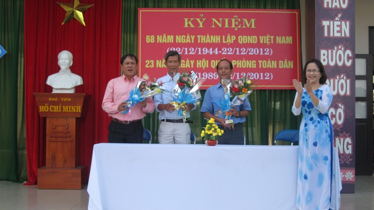
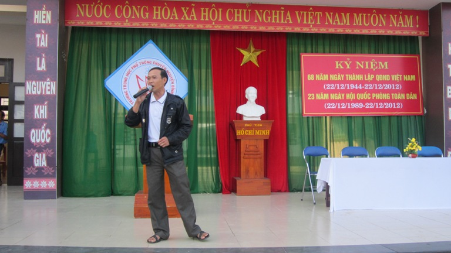
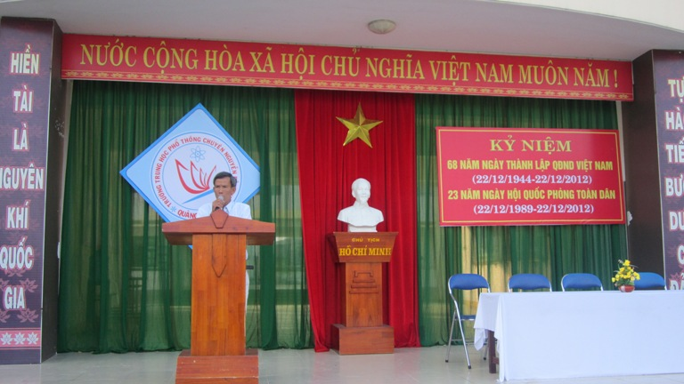
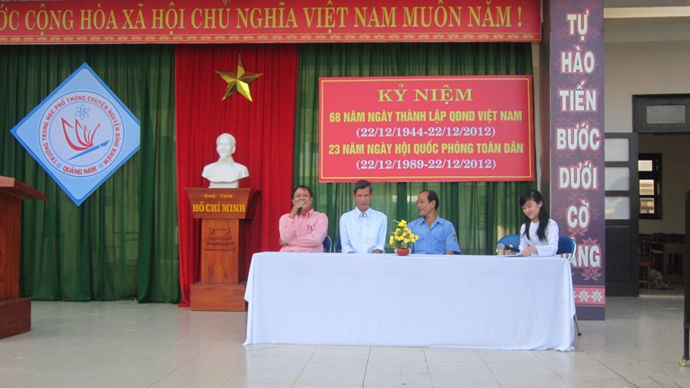

TRƯỜNG THPT CHUYÊN NGUYỄN BỈNH KHIÊM TỔ CHỨC SINH HOẠT KỶ NIỆM NGÀY THÀNH LẬP QĐND VIỆT NAM VÀ NGÀY HỘI QPTD

Lần cập nhật cuối lúc Thứ tư, 12 Tháng 12 2012 23:28 Viết bởi Administrator Thứ tư, 12 Tháng 12 2012 23:14
Kỷ niệm 68 năm Ngày thành lập Quân đội nhân dân Việt Nam, 23 năm Ngày Hội Quốc phòng toàn dân là dịp để chúng ta ôn lại lịch sử, truyền thống vẻ vang, những chiến công oanh liệt của Quân đội và nhân dân ta. Qua đó khơi dậy niềm tự hào, tự tôn dân tộc, nâng cao lòng yêu nước, yêu chủ nghĩa xã hội, ý chí quật cường, ý thức tự lực, tự cường vượt qua mọi khó khăn, thử thách, ra sức xây dựng nền quốc phòng toàn dân vững mạnh, xây dựng Quân đội nhân dân Việt Nam cách mạng, chính quy, tinh nhuệ, từng bước hiện đại, đáp ứng yêu cầu nhiệm vụ trong giai đoạn mới của cách mạng; góp phần xứng đáng vào sự nghiệp xây dựng và bảo vệ vững chắc Tổ quốc Việt Nam xã hội chủ nghĩa.

Ngày 10/12/2012 vừa qua Trường THPT Chuyên Nguyễn Bỉnh Khiêm, long trọng tổ chức lễ kỷ niệm 68 năm ngày thành lập Quân đội nhân dân Việt Nam, 23 năm Ngày Hội Quốc phòng toàn dân. Đến dự buổi lễ có Thầy Nguyễn Đình Tiến Bí thư chi bộ , Hiệu Trưởng nhà trường đồng thời cũng là cựu quân nhân, Thầy Nguyễn Đình Toàn Phó Hiệu trưởng, đại diện Công đoàn, Đoàn thanh niên, Hội LHTN cùng tất cả các Thầy, Cô giáo trong HĐSP nhà trường. Tại buổi lễ Thầy Trần Văn Mười đại diện cho các Thầy, Cô trong nhà trường cũng là cựu quân nhân lên phát biểu ôn lại những truyền thống vẻ vang của quân đội ta từ khi mới thành lập cho đến ngày hôm nay. Học sinh Nguyễn Ngọc Bảo Trân đại diện cho những thế hệ trẻ và là những chủ nhân tương lai của đất nước lên phát biểu bày tỏ những suy nghĩ của mình đối với thế thệ cha ông đi trước đã đấu tranh giành độc lập giải phóng cho dân tộc. Tại buổi lễ kỷ niệm các Thầy giáo là cựu quân nhân: Thầy Nguyễn Đình Tiến, Thầy Trần văn Mười, Anh Nguyễn Văn Chương là cựu quân nhân cũng đã giao lưu, tọa đàm cùng với Thầy, cô giáo và các em học sinh để ôn lại những kỷ niệm đáng nhớ của một thời quân ngũ.
Kết thúc buổi lễ Cô Hồ Thị Thúy Hằng, thay mặt Công đoàn nhà trường đã tặng hoa chúc mừng cho các cựu quân nhân.


Tin bài: Châu Văn Thọ- Bí thư đoàn trường
- 20/03/2013 08:34 - ĐOÀN TRƯỜNG THPT CHUYÊN NGUYỄN BỈNH KHIÊM – QUẢNG …
- 15/03/2013 10:02 - CÔNG ĐOÀN TỔ CHỨC CÁC HOẠT ĐỘNG KỈ NIỆM NGÀY QTPN …
- 04/03/2013 07:44 - TỔ NGỮ VĂN TỔ CHỨC HỘI THI THUYẾT TRÌNH VĂN HỌC NĂ…
- 21/02/2013 10:06 - TRƯỜNG THPT CHUYÊN NGUYỄN BỈNH KHIÊM TỔ CHỨC HỘI T…
- 29/01/2013 07:53 - Giấy mời Hội trại Mừng Đảng, Đón Xuân
- 07/12/2012 16:31 - HOẠT ĐỘNG CỦA CÂU LẠC BỘ TIẾNG ANH-
- 05/12/2012 21:59 - Giới thiệu Luật Công đoàn sửa đổi 2012
- 05/12/2012 06:25 - Trung tâm Phát triển nguồn nhân lực CLC làm việc v…
- 05/12/2012 06:17 - Tin an toàn giao thông
- 12/11/2012 08:30 - Kết quả xếp giải thi HSG lớp 12